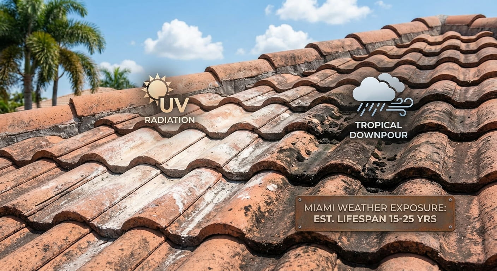

Hurricane Roof Damage in Miami: What to Do Before and After a Storm
Hurricanes can turn a roof problem into a water-intrusion problem very quickly. In Miami, preparation is not only about what the roof looks like before a storm; it is also about whether the roofing system, flashing, drainage and other components are in a condition that gives the home a reasonable chance of resisting wind and rain.
Florida's Hurricane Retrofit Guide emphasizes that a roof is a system made up of the covering, underlayment, sheathing, framing and connections. That broader view is important when evaluating hurricane damage because a few missing tiles or shingles may be only the visible part of the problem.
Before a hurricane: inspect the roof while conditions are safe
Do not wait for a storm warning to discover that a roof has a loose flashing detail or an unresolved leak. If the roof is showing signs of deterioration, arrange an inspection while weather is calm. Our Miami roof inspection guide explains what homeowners should expect from a professional evaluation.
Look from the ground for obvious signs such as missing materials, damaged flashing, blocked drainage or vegetation touching the roof. Do not climb onto the roof to perform your own high-risk inspection.
Secure the property before severe weather
Roof preparation is part of a larger property-protection plan. Loose outdoor objects, branches and poorly secured equipment can become hazards during high winds. The Florida Hurricane Retrofit Guide provides broader guidance on making homes more hurricane resistant, while emphasizing that no home can be made completely hurricane proof.
For official technical information, review the Florida Hurricane Retrofit Guide — Roofs.
What hurricane roof damage can look like
After a storm, visible damage can include missing shingles or tiles, displaced materials, damaged flashing, punctures, fallen branches and exposed roof areas. But damage may also be less obvious. Wind-driven rain can enter through small openings, and water can travel through roofing layers before appearing as an interior stain.
That is why homeowners should not assume that a roof is fine simply because the ceiling is dry immediately after the storm. A professional assessment can help determine whether the roof needs repair or more extensive work.
What to do immediately after the storm
Safety comes first. Stay away from unstable trees, electrical hazards and visibly damaged roof structures. From a safe location, photograph or video visible damage before cleanup when practical. If water is entering the home, use reasonable temporary measures to limit further damage without placing yourself on the roof.
Florida's Department of Financial Services advises homeowners to document damage, make reasonable emergency repairs to prevent additional damage and keep receipts. See the state's storm protection guidance.
Call your insurer and document the claim
If you believe the storm caused a covered loss, notify your insurance company and follow the policy's claim instructions. Keep copies of photographs, videos, receipts and communications. A roofing contractor can describe the physical condition of the roof, but the insurer determines coverage under the policy.
Our Miami roof insurance claims guide explains the documentation process in more detail.
Repair or replacement after hurricane damage?
Storm damage does not automatically mean full replacement. If damage is isolated and the rest of the roof remains sound, a repair may be appropriate. If damage is widespread, the roof is already deteriorated, or the storm exposes larger problems, replacement may be the more practical long-term option.
Ask the contractor to identify the damaged areas and explain the reasoning behind the proposed scope. If replacement is recommended, ask what evidence shows that repair is not sufficient.
Why Miami-Dade requirements matter after a storm
Emergency conditions do not eliminate the need to understand applicable permitting and building requirements. Miami-Dade County publishes current roofing permit information and provides resources for contractors and property owners. Check Miami-Dade roofing permits before major work begins.
You can also read our Miami-Dade roofing requirements guide for a plain-language overview.
How to reduce future storm risk
A replacement project can be an opportunity to look beyond the roof covering. The Florida Hurricane Retrofit Guide discusses roof-deck attachment, secondary water barriers, flashing, vents and wind-resistant roof coverings. These details matter because a roofing system has to resist more than ordinary rainfall.
Homeowners considering replacement should ask how the proposed system addresses local wind exposure and applicable code requirements. The answer should be specific to the property and product rather than a generic promise that the roof is “hurricane proof.”
Frequently asked questions
Can a roof look fine after a hurricane and still have damage?
Yes. Some problems are difficult to see from the ground and water intrusion may appear later.
Should I climb onto my roof after a storm?
No. Damaged roofs can be unstable and there may be electrical or structural hazards. Use safe ground-level documentation and professional help.
Does hurricane damage always require replacement?
No. The correct scope depends on the extent of damage and the condition of the rest of the roofing system.
Sources and further reading
- Florida Hurricane Retrofit Guide — Roofs
- Florida Hurricane Retrofit Guide — Re-Roofing
- Florida Department of Financial Services — Protect
- Miami-Dade County — Roofing Permits
Related Miami roofing guides
Storm damage roof repair · Roof insurance claims · Emergency roof repair · More roofing advice